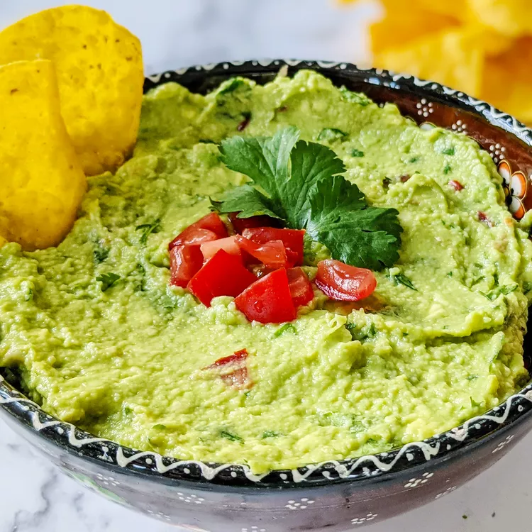

Guacamole recipe
Guacamole Ingredients
These are the ingredients you'll need to make this irresistible guacamole recipe:

- Avocados: Of course, you'll need avocados!
- Lime: Lime juice adds brightness and slows down the browning process.
- Salt: A teaspoon of salt enhances the flavors of the other ingredients.
- Vegetables: You'll also need an onion and roma tomatoes.
- Herbs and spices: Fresh cilantro, minced garlic, and cayenne pepper add tons of flavor.
How Do You Make Guacamole?
It couldn't be easier to make restaurant-worthy guac at home: Simply mix all the ingredients together! That's it.
How to Serve Guacamole?
Serve this guacamole with tortilla chips, crackers, or fresh vegetables for dipping. You can also spread it on toast, use it as a hamburger or sandwich topping, or dollop it onto a baked potato.